Distinguiamo lo scopo di verifica e validazione dalla tecnica usata per raccogliere evidenze, come il testing:
Testing, verifica e validazione: domande diverse
Attività
Domanda
Evidenza
Testing
Come si comporta il prodotto nei casi eseguiti?
Risultati osservati: possono contribuire sia alla verifica sia alla validazione.
Verifica
Il prodotto rispetta la specifica?
Test, analisi, ispezioni o metodi formali, secondo il rigore richiesto.
Validazione
Specifiche e prodotto rispondono ai bisogni reali?
Evidenze nel contesto d’uso e confronto con gli stakeholder.
Il test cerca la presenza di bug eseguendo il programma su scenari specifici e osservando i risultati. Riguarda alcuni scenari selezionati. Rivela la presenza di errori, non la loro assenza.
Nel contesto concorrente, il test e particolarmente problematico per il fenomeno degli heisenbug: il codice di test puo introdurre artefatti di temporizzazione che mascherano i bug.
La verifica confronta il prodotto con la specifica: “abbiamo costruito il sistema correttamente?”. La verifica formale mira a stabilire proprietà per tutti i comportamenti ammessi dal modello e dalle sue ipotesi.
Model checking e dimostrazioni sono tecniche formali. La verifica ingegneristica in senso più ampio comprende anche test e ispezioni; non va confusa con la validazione dei bisogni. Riferimento: NASA, verifica dell’implementazione.
La validazione chiede: "abbiamo costruito il sistema giusto?" (have we built the right system?). Verifica che il sistema soddisfi le aspettative dello stakeholder, partendo dai requisiti. E un'attivita diversa dalla verifica: un sistema puo essere verificato come corretto ma non validato perche non fa cio che ci si aspetta.
Fault, error, failure: un fault e la manifestazione di un errore (un'azione umana che produce un risultato incorretto). Un failure si verifica quando un fault viene incontrato durante l'esecuzione. Un failure puo essere causato da molti fault, e un fault puo causare molti failure.
Idea chiave
Test e debugging restano utili anche nei programmi concorrenti, ma una sequenza di esecuzioni non copre automaticamente tutti gli interleaving. Lo stesso input può produrre risultati diversi; log, breakpoint e strumentazione possono cambiare lo scheduling e mascherare un difetto temporale (heisenbug).
Da qui la necessità di due tecniche formali principali per la verifica, che occupano il resto del capitolo: il model checking (esplorazione esaustiva dello spazio degli stati) e la dimostrazione induttiva di invarianti.
2. Proprietà di correttezza: safety, liveness, fairness
Un programma concorrente può ammettere più interleaving delle azioni atomiche. Questi possono produrre risultati diversi, ma non necessariamente: un programma ben sincronizzato può conservare lo stesso risultato attraverso molte esecuzioni. Il numero di test eseguiti, da solo, non misura la copertura degli scenari. Il model checking esplora sistematicamente gli stati del modello scelto; una conclusione esaustiva richiede che la ricerca copra quel perimetro senza tagli non giustificati.
Il testing rivela la presenza di errori, non la loro assenza. Nei programmi concorrenti, lo stesso input puo dare output diversi in scenari diversi.
— Prof. Ricci
Idea chiave
Un programma concorrente va modellato come un insieme di possibili scenari di esecuzione (computazioni). La correttezza non si dimostra provando qualche input, ma verificando proprieta che devono valere in tutti gli scenari.
Safety e Liveness
Safety e liveness descrivono due aspetti della correttezza di una computazione. Una specifica può combinarli: non ogni formula appartiene esclusivamente a una delle due famiglie.
Safety: ogni violazione ha un prefisso finito irrimediabile; nessuna continuazione può cancellare ciò che è già accaduto. Un invariante G P, con P predicato di stato, è un caso importante, non la definizione generale: alcune proprietà richiedono anche la storia degli eventi.
Mutua esclusione: mai due thread contemporaneamente nella sezione critica.
Assenza di deadlock globale: non raggiungere uno stato non terminale in cui nessuna azione del sistema è abilitata. La terminazione lecita va distinta dal blocco; un sottoinsieme di processi può essere in deadlock anche mentre altri avanzano.
Liveness: nessun prefisso finito, da solo, rende la proprietà irrimediabilmente falsa; esiste ancora una continuazione che la soddisfa. F P è un esempio semplice. Una risposta richiesta ripetutamente si esprime invece con G (richiesta → F risposta). Il modello e le sue ipotesi devono garantire le continuazioni necessarie.
Assenza di starvation: un processo che richiede una risorsa alla fine la ottiene.
Risveglio dovuto: se si realizza la condizione prevista dal protocollo, il processo in attesa deve poter proseguire; non ogni attesa richiede un risveglio incondizionato.
Consegna eventuale: ogni messaggio inviato viene prima o poi ricevuto, sotto le ipotesi dichiarate su rete e guasti. L'affidabilità può richiedere anche proprietà di safety, come assenza di duplicati.
Fairness: vincola le esecuzioni ammesse rispetto ad azioni specifiche. Per un'azione A, indichiamo con enabled(A) la possibilità di eseguirla e con taken(A) il fatto che venga eseguita nel passo corrente.
Debole (WF): A non può essere ignorata per sempre se rimane continuamente abilitata. Su una traccia infinita: FG enabled(A) → GF taken(A).
Forte (SF): A non può essere ignorata per sempre se è abilitata infinitamente spesso, anche con interruzioni: GF enabled(A) → GF taken(A).
Convenzione delle slide: la fairness delle azioni incondizionate ammissibili è inclusa nella definizione di scheduler weakly/strongly fair. Le formule qui sopra riguardano la singola azione scelta; non impongono di eseguire azioni disabilitate.
Riepilogo, con le ipotesi rese esplicite:
Proprieta
Descrizione
Esempio
Safety
Una violazione è riconoscibile da un prefisso finito
Mutua esclusione: G ¬(p3 ∧ q3)
Liveness
Un prefisso finito ammette ancora una continuazione soddisfacente
Assenza di starvation: G (p2 → F p3)
Fairness
Ipotesi sulle azioni abilitate e sui passi eseguiti
WF non basta se l'abilitazione continua a interrompersi
Per l'esame
Distinguere safety da liveness e saper riconoscere esempi concreti: la mutua esclusione e una proprieta di safety; l'assenza di starvation e una proprieta di liveness. La fairness e un'ipotesi sullo scheduler che puo trasformare alcune proprieta da false a vere.
Le slide del modulo 1.2 (pp. 28–32) introducono gli esempi di base; la distinzione generale per prefissi segue Alpern e Schneider, Defining Liveness. Per la fairness di azioni: Lamport, Specifying Systems, capitolo 8. La fairness esclude alcuni comportamenti dal modello: non dimostra che lo scheduler reale rispetti l'ipotesi.
3. La logica temporale lineare (LTL)
La Logica Temporale Lineare (LTL) estende la logica proposizionale con operatori sull'evoluzione degli stati. Una formula si valuta in una posizione di una singola traccia infinita. Un modello soddisfa la formula se questa vale nella posizione iniziale di tutte le tracce ammesse; richiederla in ogni posizione è il compito di G, non una convenzione implicita per ogni formula.
Operatori temporali di base
Operatore
Notazione
Significato
Always (box)
[] P o G P
P vale in ogni posizione da quella corrente in poi, inclusa
Eventually (diamond)
<> P o F P
P vale in almeno una posizione corrente o successiva
Next
O P o X P
P e vera nel prossimo stato
Until
P U Q
Esiste j ≥ i con Q vera in j; P deve valere per i ≤ k < j, non necessariamente in j
Weak Until
P W Q
(P U Q) ∨ G P: Q può non arrivare, ma allora P deve valere sempre
Conseguenze da non confondere:
Se Q è vera già adesso, P U Q e P W Q sono vere anche con P falsa. Questo coincide con la definizione delle slide, modulo 1.2, p. 69.
GF P significa P infinitamente spesso; FG P significa P sempre vera da un certo punto in avanti. Una sequenza alternata le distingue.
G da solo non identifica una proprietà di safety: G F P è una proprietà di liveness per un predicato P di stato soddisfacibile. Occorre leggere l'intera formula.
P U Q può combinare safety (non perdere P prima di Q) e liveness (raggiungere Q). La notazione matematica non implica che ogni strumento supporti ogni operatore: in SPIN, X richiede una build apposita e attenzione alla riduzione dell'ordine parziale.
Specifica di proprieta
Il professore mostra come si esprimono le proprieta di correttezza in LTL:
Mutua esclusione: [] !(p3 && q3) — mai entrambi in CS.
Assenza di starvation (progress): [](p2 -> <> p3) — ogni volta che P vuole entrare in CS, prima o poi ci riesce.
Bounded overtaking: limita gli scavalchi mentre P attende. È distinto dall'obbligo che P entri prima o poi: W ammette anche un'attesa infinita senza ulteriori scavalchi.
Proprieta
Formula LTL
Mutua esclusione
[] !(p3 ∧ q3)
Assenza di starvation per P
[](p2 → <> p3)
Nessun intervallo di Q prima di P
B0 = (¬CSq) W CSp
Al massimo un intervallo di Q prima di P
B1 = (¬CSq) W (CSq W B0)
1-bounded overtaking, a ogni richiesta
G (tryp → B1)
Per l'esame
Saper scrivere in LTL: mutua esclusione []!(p3&&q3), progress/starvation [](p2-><>p3), e capire la differenza fra []<>P (infinitamente spesso) e <>[]P (stabilizzazione). Duality: ![]P = <>!P.
Qui CSp/CSq significano “P/Q è in sezione critica”, tryp significa “P sta richiedendo l'ingresso”. La formula delle slide conta intervalli contigui con CSq vera prima del primo CSp: stare più passi nella stessa CS non conta più ingressi. Se Q è già in CS quando P richiede, quell'intervallo conta come il primo. Per contare solo ingressi successivi alla richiesta serve invece un predicato di evento e una convenzione esplicita.
Le slide scrivono l'implicazione per la posizione corrente; G la impone a ogni richiesta. Per ottenere anche assenza di starvation occorre aggiungere G (tryp → F CSp), con le opportune ipotesi di progresso. Riferimento per sintassi e limiti dello strumento: manuale LTL di SPIN.
Tracce infinite descritte in modo finito
Gli esempi editoriali seguenti sono tracce a lasso: si visitano gli stati numerati da 0 in poi, poi dall’ultimo si torna allo stato indicato, ripetendo il ciclo per sempre. 1 significa vero, 0 falso. Gli esiti valutano la formula nello stato 0 della singola traccia: non costituiscono una verifica di tutti i comportamenti di un programma.
Scarica valutatore, formule e tracce. Con Node.js: node ltl-traces.cjs stampa gli esiti. Nessuna libreria aggiuntiva; la pagina non esegue questo codice e le tabelle restano disponibili senza JavaScript.
Until e weak until
Valutazioni e ciclo: ordine dei valori p, q
Traccia
Stati 0, 1, …
Ritorno a
P U Q
P W Q
Q vera già adesso
0: (0,1)
0
Vera
Vera
P fino a Q, non nello stato Q
0: (1,0) 1: (0,1)
1
Vera
Vera
P sempre, Q mai
0: (1,0)
0
Falsa
Vera
P cade prima di Q
0: (0,0) 1: (0,1)
1
Falsa
Falsa
Ricorrenza e stabilizzazione
Valutazioni e ciclo: ordine dei valori p
Traccia
Stati 0, 1, …
Ritorno a
GF P
FG P
P alterna vero e falso
0: (1) 1: (0)
0
Vera
Falsa
P diventa e rimane vera
0: (0) 1: (1)
1
Vera
Vera
Fairness della singola azione A
Valutazioni e ciclo: ordine dei valori enabled, taken
Traccia
Stati 0, 1, …
Ritorno a
WF(A)
SF(A)
A abilitata a intermittenza, mai eseguita
0: (1,0) 1: (0,0)
0
Vera
Falsa
A sempre abilitata, mai eseguita
0: (1,0)
0
Falsa
Falsa
A eseguita a ogni riabilitazione
0: (1,1) 1: (0,0)
0
Vera
Vera
A eseguita una volta, poi disabilitata
0: (1,1) 1: (0,0)
1
Vera
Vera
Limite agli scavalchi e progresso
Valutazioni e ciclo: ordine dei valori tryp, p3, q3
Nei casi di fairness, taken descrive il passo uscente dallo stato ed è vera solo quando enabled è vera. Nei casi di scavalco p3/q3 sono CSp/CSq. Il conteggio riguarda intervalli contigui di Q, non il numero di stati con q3 vera. Gli esempi con due scavalchi fanno poi entrare P: mostrano che progresso e limite agli scavalchi sono requisiti separati.
4. Model checking
Il model checking verifica automaticamente proprietà su un modello del sistema. Una ricerca completa può stabilire le proprietà controllate, entro le assunzioni dichiarate. Input, ambiente e limiti fanno parte della verifica; non tutti gli strumenti controllano automaticamente qualunque formula LTL.
Se la ricerca è completa e non trova violazioni, la proprietà controllata vale per il modello esplorato.
Se la ricerca termina per limiti, errori dello strumento o interruzione, l’assenza di controesempi osservati non basta a concludere.
Se trova una violazione, produce un controesempio: un prefisso finito per una safety oppure, nei casi di liveness su modelli finiti, una rappresentazione di un comportamento infinito mediante prefisso e ciclo.
Fig. 1 — Due controesempi, non due esecuzioni dello stesso algoritmo. In alto il prefisso raggiunge p3 = q3 = 1: qualsiasi continuazione conserva la violazione già avvenuta. In basso p3 resta 0 mentre tryp resta 1: il ritorno r2 → r1 specifica un ciclo ripetuto all'infinito, non una semplice attesa osservata per pochi secondi. Questa traccia rispetta la mutua esclusione ma viola la risposta eventuale a P. Le frecce rappresentano passi astratti, non durate; non si assumono condizioni di fairness. Un ciclo è un controesempio solo se realizza la violazione della proprietà sotto le ipotesi ammesse. Gli stati sono definiti e controllati nello stesso modello delle tracce.
Applicazioni
Il model checking non si applica solo al software, ma anche all'hardware (Intel lo adotto dopo il Pentium Bug del 1994) e ai sistemi mission-critical (NASA dopo il Mars Polar Lander incident del 1999). Altre applicazioni citate: Amazon Web Services per i propri sistemi cloud.
SPIN esplora modelli concorrenti e controlla asserzioni, stati finali non validi e proprietà temporali, secondo la configurazione scelta.
PROMELA e il linguaggio di modellazione per SPIN, con costrutti limitati e pensati per descrivere modelli di sistemi concorrenti.
L'esempio completo di Dekker avvia due processi e distingue verifica della mutua esclusione da verifica del progresso con fairness. Un frammento che mostra solo P non rappresenta il protocollo completo.
JPF (Java Path Finder) e un model checker specializzato per la verifica di programmi Java, sviluppato dalla NASA.
La VM JPF esplora il bytecode insieme a librerie modellate, input e configurazione. Una ricerca limitata o interrotta non stabilisce l'assenza di violazioni: i tre esiti sono distinti nella sezione 6.
Se trova un errore, riporta l'intera esecuzione che ha portato all'errore.
TLA+ (Temporal Logic of Actions, Leslie Lamport) e un linguaggio formale di specifica basato su matematica discreta (teoria degli insiemi e predicati).
Usato per specificare e verificare sistemi reali complessi — es.: Amazon Web Services lo ha adottato per i suoi sistemi cloud.
Una specifica TLA+ descrive l'insieme di tutti i possibili comportamenti legali (trace) del sistema.
PlusCal (ex +CAL) e un linguaggio algoritmico basato su TLA+: si scrive un algoritmo come in un linguaggio di programmazione, viene tradotto in TLA+, e poi verificato con il model checker TLC.
State-space explosion
Il grande problema del model checking e la dimensione dello spazio degli stati, che cresce esponenzialmente con il numero di processi e azioni: sistemi reali possono avere miliardi o trilioni di stati. Tecniche allo stato dell'arte includono:
Riduzione manuale: semplificare il modello eliminando variabili o istruzioni irrilevanti per la proprieta da verificare (variabili modellabili con un numero limitato di valori)
Costruzione incrementale: esplorare solo gli stati raggiungibili, fermandosi se si trova uno stato falsificante
Model checking simbolico: lavorare con insiemi di stati descritti in modo intensivo (BDD) anziché estensivo
Nota del redattore
Il professore accenna che il model checking e stato adottato da Intel dopo il bug del Pentium nel 1994 e dalla NASA dopo l'incidente del Mars Polar Lander nel 1999. Il problema principale del model checking e l'esplosione dello spazio degli stati: tecniche come la costruzione incrementale, la riduzione simbolica e l'uso di variabili con dominio limitato aiutano a gestire grafi con milioni di stati.
5. Dimostrazione induttiva di invarianti
Un approccio alternativo al model checking, puramente matematico: invece di esplorare tutti gli stati, si dimostra che una proprieta (invariante) — una formula che deve essere invariabilmente vera in ogni punto di ogni computazione, come [] ¬(p3 ∧ q3) — vale per induzione sugli stati di tutte le computazioni:
Base case: l'invariante e vero nello stato iniziale
Passo induttivo: assumendo che l'invariante valga in uno stato S (ipotesi induttiva), si dimostra che vale in tutti i possibili stati successivi a S
La dimostrazione induttiva non richiede di generare tutti gli stati, ma richiede la formulazione di un invariante induttivo sufficientemente forte — un'abilita che il professor Ricci descrive come "un'arte difficile".
Questo approccio e supportato da sistemi deduttivi automatici (theorem provers) e da linguaggi di specifica formale come TLA+ di Leslie Lamport, usato ad esempio da Amazon Web Services per verificare sistemi reali. TLA+ permette di specificare sia le proprieta di correttezza (il "cosa") sia il progetto del sistema (il "come"), e supporta model checking tramite TLC. Include PlusCal, un linguaggio algoritmico che viene tradotto automaticamente in TLA+.
Per l'esame
Per confutare un invariante basta un cammino verso uno stato che lo viola; una safety più generale può richiedere la storia del prefisso. Una violazione di liveness riguarda un comportamento infinito: nei modelli finiti si possono cercare cicli opportuni nel prodotto con l'automa della proprietà. Non basta trovare un ciclo qualsiasi, né osservare un timeout.
Il professore conclude che capire il senso di queste cose — perche un algoritmo funziona, perche e stato progettato in un certo modo — e essenziale per un ingegnere, ancora di piu in un'epoca in cui l'AI genera codice. Saper riconoscere se la soluzione proposta da uno strumento automatico e corretta o meno e una competenza fondamentale.
6. Gli strumenti: SPIN/PROMELA, JPF e TLA+/PlusCal
Il professor Ricci presenta alcuni strumenti concreti per la verifica formale dei programmi concorrenti, inquadrandoli nel panorama piu ampio del model checking.
SPIN e uno dei model checker piu utilizzati, sia in ambito accademico che industriale. PROMELA (Process Meta-Language) e il linguaggio di modellazione per SPIN. Permette di descrivere sistemi concorrenti con un insieme limitato di costrutti, appositamente progettati per costruire modelli astratti. SPIN puo verificare proprieta LTL sullo spazio degli stati del modello PROMELA.
Il professore mostra un esempio di Dekker in PROMELA, dimostrando come si modella un algoritmo di mutua esclusione e lo si verifica con SPIN.
Java PathFinder (JPF) parte dal bytecode Java e verifica proprietà entro una VM e librerie modellate. Può trovare interleaving difficili da riprodurre con test ordinari, ma non elimina astrazioni e limiti di esplorazione. Le sezioni 7–9 riportano configurazione, sorgenti ed esiti effettivamente eseguiti.
TLA+ (Temporal Logic of Actions), introdotto da Leslie Lamport, e un linguaggio di specifica formale basato su logica temporale e insiemistica. Usato da Amazon Web Services per verificare i propri sistemi distribuiti (es. meccanismi di consenso, protocolli di replicazione). PlusCal e un linguaggio algoritmico basato su TLA+ che viene tradotto automaticamente in specifiche TLA+ verificabili con il model checker TLC.
Il professore mostra un esempio di Peterson in PlusCal.
Nota del redattore
SPIN esplora modelli PROMELA; JPF parte dal bytecode Java ma usa una VM e librerie modellate, quindi non elimina le assunzioni di modellazione; TLA+ descrive sistemi mediante specifiche, verificabili entro una configurazione TLC. La scelta dipende dal livello di dettaglio e dalle proprietà richieste, non dall'assenza di astrazione.
Dekker: un modello PROMELA completo
Il modello editoriale seguente completa l'esempio del modulo 1.2, p. 77: active [2] avvia due istanze, con identificatori 0 e 1 e turn iniziale 0. Dichiarare soltanto due proctype non li avvia. La versione precedente priva di active/init viene rifiutata da SPIN perché non esiste alcun processo eseguibile.
Le letture e scritture condivise sono passi atomici sotto consistenza sequenziale. L'intero protocollo non è racchiuso in atomic. Il contatore in_cs osserva gli ingressi: non è il lock che garantisce l'esclusione. L'asserzione deve valere con qualsiasi interleaving ammesso. Il modello non certifica una traduzione ingenua in Java o C su memoria debole.
/* Editorial two-process Dekker model. SPIN 6.5.1.
* Shared reads/writes are sequentially consistent atomic statements.
* No atomic block encloses the entry protocol or the critical section.
* in_cs is an observer, not a lock used by the algorithm.
*/
bool want[2];
byte turn = 0;
byte in_cs = 0;
active [2] proctype Dekker() {
byte me = _pid;
byte other = 1 - _pid;
do
:: true ->
request:
want[me] = true;
do
:: want[other] ->
if
:: turn == other ->
want[me] = false;
(turn == me);
want[me] = true
:: else -> skip
fi
:: else -> break
od;
cs:
in_cs++;
assert(in_cs == 1);
in_cs--;
turn = other;
want[me] = false
od
}
/* Each property requires a separate verifier run (-N). */
ltl response_p { [] (Dekker[0]@request -> <> Dekker[0]@cs) }
ltl response_q { [] (Dekker[1]@request -> <> Dekker[1]@cs) }
Tre verifiche distinte
Comandi provati con SPIN 6.5.1 e GCC 14.2.0, nella directory del file scaricato. Il primo eseguibile controlla asserzioni e stati finali non validi, senza usare claim LTL. Il secondo verifica separatamente la risposta a ciascun processo.
-a -f cerca cicli di accettazione applicando weak fairness ai processi; non è strong fairness di ogni ramo. -N sceglie una proprietà: una singola esecuzione non verifica automaticamente entrambe. I run LTL non sostituiscono il controllo separato degli stati finali. Qui non si usano bitstate hashing né riduzione dell'ordine parziale; i limiti di profondità e memoria vanno comunque controllati nel report.
Esiti registrati con SPIN
Controllo
Esito
Stati memorizzati o distinti osservati
Asserzione di mutua esclusione e stati finali
Ricerca completa nel modello
204
Risposta a P, weak fairness dei processi
Ricerca completa nel modello
332
Risposta a Q, weak fairness dei processi
Ricerca completa nel modello
332
Risposta a P, senza fairness
Controesempio
17
Asserzioni, profondità massima 2
Non conclusivo: limite raggiunto
3
Variante errata: protocollo di ingresso saltato
Controesempio
33
Senza -f, P può restare fermo mentre Q continua: il controesempio non confuta la proprietà dichiarata sotto fairness. Con -m2, il report contiene zero violazioni osservate ma segnala profondità insufficiente: non è una verifica riuscita. La variante negativa sostituisce il ciclo di ingresso con skip e viola l'asserzione. Questi controlli negativi non sono proposti come implementazioni corrette.
I numeri della tabella riguardano il verificatore configurato, anche il prodotto con il claim LTL. In caso di controesempio o limite, sono conteggi parziali, non la dimensione completa del grafo. Il valore di uscita del processo non basta a interpretare il report.
JPF usa una VM per bytecode Java che supporta backtracking e scelta dello scheduling. Esplora gli stati del programma insieme alle librerie modellate e alla configurazione. Le proprietà predefinite di jpf-core controllano deadlock ed eccezioni non catturate, comprese le asserzioni abilitate.
Una proprietà arbitraria richiede un controllo o un’estensione adeguati: scrivere una formula LTL nel capitolo non la rende automaticamente verificata da jpf-core. Un controesempio documenta una violazione nel modello; la corrispondenza con il sistema reale va valutata.

Programma, input, librerie modellate, proprietà e configurazione definiscono il perimetro. Un controesempio confuta una proprietà nel modello e va interpretato rispetto al programma reale. Senza violazioni, occorre distinguere esplorazione completa da limiti o interruzioni: “no errors found” da solo non basta. Errori di avvio o incompatibilità non sono controesempi del programma né verifiche riuscite. La correttezza della specifica rispetto ai bisogni resta una questione di validazione.
Il professor Ricci cita un caso storico: l'uso del model checking da parte di Intel dopo il Pentium Bug del 1994, e l'adozione da parte della NASA dopo l'incidente del Mars Polar Lander (1999). Questi eventi hanno dimostrato l'importanza della verifica formale nei sistemi critici.
Peterson: da PlusCal a TLA+, poi TLC
Il modulo completo conserva i sette punti di controllo delle slide (a0, a1, a2, a3a, a3b, cs, a4) e definisce Not(i) == 1 - i per i processi 0 e 1. Le costanti booleane sono TRUE/FALSE. Ogni passo va da un'etichetta alla successiva: i test di flag e turn restano separati, senza rendere atomico l'intero protocollo.
Il traduttore genera pc, Init, Next, vars e Spec. pc[i] = "cs" indica che il processo i si trova in sezione critica. FairSpec aggiunge weak fairness a ciascuna azione di processo; StarvationFreedom richiede una futura visita a cs dopo ogni visita ad a1. Non è una garanzia dello scheduler o del modello di memoria di un linguaggio reale.
Scaricare i quattro file nella stessa directory e aggiungere tla2tools.jar dalla release ufficiale 1.7.4. Le prove usano OpenJDK 11, traduttore PlusCal 1.11 e TLC 2.19. -nocfg preserva le configurazioni scaricate; la traduzione modifica la copia locale di Peterson.tla. Una sola CPU di lavoro e 512 MB di heap sono sufficienti per questo piccolo modello.
Per il modulo scaricabile TLC trova 58 stati distinti (117 generati, comprese rivisite) e svuota la coda. Un'esplorazione indipendente confronta l'intero insieme dei 58 stati, non solo il totale. Il “146” riportato nel precedente testo non è riprodotto da questa versione e non va presentato come una costante dell'algoritmo: conteggi e granularità dipendono dalla specifica e dagli strumenti. TLC usa fingerprint; il confronto esplicito supplementare riguarda questo piccolo grafo, non tutti i modelli possibili.
Con Spec senza fairness, TLC produce una richiesta non servita seguita da stuttering infinito (stato invariato). Con FairSpec non trova violazioni delle proprietà configurate. Eliminando la definizione di Not, la verifica non parte per errore semantico: non è un controesempio a Peterson.
Controllo negativo: assegnare turn a se stessi
Questa variante è volutamente errata: solo l'istruzione a2 cambia da turn := Not(self) a turn := self. Il resto rimane identico. La traccia seguente è restituita da TLC e controllata passo per passo; l'ultima riga viola MutualExclusion.
Traccia reale della variante errata
Stato
pc[0]
pc[1]
flag[0], flag[1]
turn
1
a0
a0
0, 0
0
2
a1
a0
0, 0
0
3
a2
a0
1, 0
0
4
a3a
a0
1, 0
0
5
cs
a0
1, 0
0
6
cs
a1
1, 0
0
7
cs
a2
1, 1
0
8
cs
a3a
1, 1
1
9
cs
a3b
1, 1
1
10
cs
cs
1, 1
1
L'obiettivo matematico è Spec ⇒ □MutualExclusion. Scrivere un enunciato THEOREM non lo dimostra: una prova deduttiva richiede un invariante induttivo e obblighi di prova, distinti da queste esecuzioni TLC. Qui non è stata eseguita una prova con TLAPS. Il model checking esplora una configurazione; non rende finita qualsiasi specifica TLA+.
Il laboratorio presenta JPF tramite Docker con JDK 11. Occorre distinguere la JVM che esegue JPF dal bytecode e dalle librerie che JPF può modellare: una JVM host recente non rende automaticamente supportate tutte le API Java recenti.
Le prove editoriali usano jpf-core ee18da511fb59, compilato ed eseguito con OpenJDK 11. Questi comandi presuppongono JDK 11 selezionato tramite JAVA_HOME e disponibile nel PATH, e una nuova directory di lavoro:
La build produce build/RunJPF.jar e le librerie necessarie. Sono state eseguite la costruzione dei jar e le prove della sezione 9, non l’intera suite upstream. La build emette avvisi upstream di deprecazione e operazioni unchecked: non è descritta come priva di avvisi.
La variante Docker del laboratorio
Nella revisione indicata, il Dockerfile prepara una base Temurin 11 e gli strumenti; Compose monta il checkout in /home/jpf-core. La sola costruzione dell’immagine non compila automaticamente JPF. Il servizio si chiama jpf-dev:
docker compose build
docker compose run --rm jpf-dev
# Nella shell del container:
./gradlew --no-daemon --no-scan buildJars
La configurazione Docker è stata letta, non eseguita su questa VPS. I file del repository didattico possono differire: non assumere che servizio, mount e script coincidano. Un problema del wrapper va diagnosticato confrontandolo con il file versionato, non eliminando caratteri alla cieca. Fonti: Dockerfile fissato e Compose fissato.
8. JPF: configurazione e primo test
Il file .jpf specifica il programma, gli input e la politica di verifica. Il classpath del programma analizzato non è il classpath della JVM host che esegue JPF.
target: classe con il main; target.args: argomenti di quel main.
classpath: directory dei bytecode target; sourcepath: sorgenti utili per leggere la traccia.
search.properties: proprietà controllate; search.class: strategia di ricerca.
vm.enable_assertions: abilita gli assert; search.depth_limit: limite di profondità della ricerca.
Nell’esempio Java, configurazione e classi compilate stanno nella stessa directory: ${config_path} indica la directory del file di configurazione. Non si usa la variabile non definita ${jpf}. Per un progetto Maven il classpath deve invece puntare alla directory effettiva dei bytecode, normalmente target/classes.
Usiamo DFSearch e FullStateSet per conservare gli stati serializzati senza affidarsi soltanto a una firma hash compatta. Librerie modello, serializzatore e riduzioni restano parte delle ipotesi. Il perimetro è un programma finito con due thread e due incrementi, non ogni possibile uso della classe.
Riferimento: configurazione di JPF. Le opzioni sulla riga di comando con +nome=valore prevalgono su quelle nel file.
9. JPF in azione: controesempio, ricerca completa e limite
JpfCounter avvia due thread che incrementano una variabile volatile. In modalità unsafe la sequenza lettura–somma–scrittura non è atomica: JPF trova un’esecuzione con valore finale 1. In modalità safe un unico monitor protegge l’intero incremento e la ricerca finita completa non trova violazioni delle proprietà configurate.
Il main legge il valore dopo entrambi i join. volatile non rende atomico l’incremento: la variante sincronizzata distingue visibilità e azione composta.
/** Java 11 target for the pinned JPF example; volatile is not an atomic increment. */
public final class JpfCounter {
private static volatile int value;
private static boolean safe;
private static void increment() {
if (safe) {
synchronized (JpfCounter.class) {
value = value + 1;
}
} else {
value = value + 1;
}
}
public static void main(String[] args) throws InterruptedException {
if (args.length != 1 || !(args[0].equals("safe") || args[0].equals("unsafe"))) {
throw new IllegalArgumentException("Choose safe or unsafe");
}
safe = args[0].equals("safe");
value = 0;
Thread first = new Thread(JpfCounter::increment, "first");
Thread second = new Thread(JpfCounter::increment, "second");
first.start(); second.start();
first.join(); second.join();
assert value == 2 : "Lost update: value=" + value;
}
}
# JPF core ee18da511fb59b8f19a23dd1240fbcc234afc420, OpenJDK 11.
# Place this file and the compiled JpfCounter*.class files in the same directory.
target = JpfCounter
target.args = unsafe
classpath = ${config_path}
sourcepath = ${config_path}
vm.enable_assertions = *
search.class = gov.nasa.jpf.search.DFSearch
search.properties = gov.nasa.jpf.vm.NotDeadlockedProperty,gov.nasa.jpf.vm.NoUncaughtExceptionsProperty
search.multiple_errors = false
search.match_depth = false
# Exact state matching for this small example, not a compact hash signature.
vm.storage.class = gov.nasa.jpf.vm.FullStateSet
report.console.property_violation = error,trace
report.console.finished = result,statistics
Esiti osservati con JPF ee18da511fb5 e javac 11.0.32.1. Il file jpf-results.json registra configurazione, hash dei sorgenti e notifiche della ricerca.
Stesso programma, esiti da distinguere
Variante
Violazioni
Vincoli raggiunti
Interpretazione
Incremento non protetto
1
0
Controesempio: valore finale 1
Incremento sincronizzato
0
0
Ricerca completa nel modello configurato
Non protetto, profondità 1
0
1
Non conclusivo
Classe target assente
0
0
Non conclusivo: ricerca non avviata
Salva Java e configurazione nella stessa directory, compila con JDK 11 ed esegui i tre casi. Sostituisci il percorso del jar con quello della build precedente:
Zero errori osservati non significa ricerca completa
Nel terzo caso il programma è ancora quello non protetto. JPF stampa no errors detected, ma segnala anche depth limit reached: 1: la ricerca non arriva alla violazione. Occorre leggere insieme proprietà violate, vincoli raggiunti e conclusione della ricerca. Nemmeno il solo exit code del processo è una prova di correttezza.
La classe target assente è un ulteriore controllo negativo: la ricerca non parte e non viene registrata come riuscita. Le prove usano anche un listener host per raccogliere queste notifiche; il piccolo classificatore è valido per le configurazioni DFSearch esercitate, non per ogni estensione, filtro di stati o interruzione esterna.
Nella revisione fissata, l’opzione non predefinita search.match_depth=true ha prodotto un errore interno prima dell’esplorazione utile. Gli esempi usano il valore predefinito false. L’errore dello strumento è documentato separatamente e non conta come controesempio del programma; la ricerca limitata resta comunque non conclusiva.
10. Perché la verifica conta
Il debugging di programmi concorrenti è utile, ma una singola esecuzione non copre tutti gli interleaving. Instrumentazione e pause possono cambiare lo scheduling. Il controllo sistematico e le prove formali aggiungono evidenze, entro il modello e le proprietà effettivamente verificati.
La verifica formale (model checking, dimostrazioni induttive) non e un lusso accademico, ma una necessita ingegneristica. Progetti critici (NASA, Amazon, Intel) usano queste tecniche non solo per trovare bug, ma per certificare l'assenza di determinate classi di errori.
Metodi formali principali:
Model checking — generazione esaustiva degli stati e verifica automatica delle proprieta (strumenti: SPIN, JPF, TLC)
Dimostrazioni induttive di invarianti — si dimostra che A e vero nello stato iniziale (base) e che se A e vero in uno stato S, allora e vero in tutti gli stati successivi a S (passo induttivo)
Per l'esame
Un prefisso finito può già confutare una safety; una liveness pura non si confuta osservando soltanto un'attesa finita. Nei modelli finiti, prefisso e ciclo possono descrivere un controesempio infinito. Fairness e proprietà controllata determinano quali cicli contano: non ogni ciclo è un errore.
Verifica le tue conoscenze
1. Che cos'e il pattern check-and-act e perche e problematico in ambito concorrente?
Il pattern check-and-act consiste nel controllare una condizione (es. "if (counter > 0)") e poi eseguire un'azione che dipende da quella condizione (es. "counter--"). In ambito concorrente, il check e l'act sono due operazioni distinte: tra la lettura della condizione e l'esecuzione dell'azione, un altro thread puo modificare lo stato, invalidando la condizione. La soluzione e rendere atomico l'intero blocco con synchronized o un lock.
2. Quali sono le quattro condizioni necessarie per il deadlock (Coffman)?
(1) Mutua esclusione: le risorse non sono condivisibili. (2) Hold and wait: un processo tiene una risorsa mentre ne richiede un'altra. (3) No preemption: le risorse non possono essere sequestrate. (4) Attesa circolare: esiste un ciclo di processi che attendono risorse l'uno dall'altro. Tutte e quattro devono valere simultaneamente perche si verifichi un deadlock.
3. Qual e la differenza fra synchronized e ReentrantLock?
synchronized e un costrutto intrinseco del linguaggio: il lock viene acquisito e rilasciato automaticamente (anche in caso di eccezioni), e non e possibile dimenticarsi di rilasciarlo. ReentrantLock e un lock esplicito che richiede uno sbLocco esplicito (pattern try/finally obbligatorio). Offre funzionalita aggiuntive: lockInterruptibly() (risponde agli interrupt), tryLock() (non bloccante), tryLock(timeout) (con time-out), e la possibilita di creare lock equi (fair).
4. Come si esprime la mutua esclusione in LTL? E l'assenza di starvation?
Mutua esclusione: [] !(p3 && q3), dove p3/q3 indicano la presenza in CS: è un invariante di safety. Assenza di starvation per P: [](p2 → <> p3), dove p2 indica la richiesta: ogni richiesta deve avere una risposta eventuale. È liveness, da verificare sotto le ipotesi di progresso dichiarate; non richiede che una richiesta venga effettivamente emessa.
5. Cosa fa Java PathFinder e come si differenzia da una JVM normale?
JPF esplora gli stati del programma e delle librerie modellate secondo input, proprietà e configurazione. Può produrre un controesempio, completare la ricerca senza violazioni nel perimetro dichiarato, oppure fermarsi senza una conclusione esaustiva. Un report senza errori osservati non basta se sono intervenuti limiti. La validazione della specifica rispetto ai bisogni resta distinta.
6. Perche il numero di scenari di un programma concorrente cresce cosi rapidamente?
Per m processi ciascuno con n azioni atomiche, il numero di scenari e dato dalla formula (m*n)! / (n!)^m (coefficiente multinomiale). Ad esempio, 2 processi con 4 azioni generano 70 scenari; 3 processi con 4 azioni generano 34.650 scenari. Questa crescita esplosiva e nota come state-space explosion ed e la ragione per cui servono tecniche avanzate (riduzione dell'ordine parziale, hashing degli stati, model checking simbolico) per rendere la verifica fattibile.
7. Cosa significa che una classe e thread-safe?
Una classe e thread-safe se puo essere usata correttamente in qualsiasi contesto, sequenziale o concorrente, senza che chi la usa debba aggiungere sincronizzazione. La correttezza e garantita internamente dall'implementazione. Le classi della libreria standard Java (es. ArrayList) non sono thread-safe per scelta progettuale: la sincronizzazione ha un costo, e in contesti puramente sequenziali sarebbe sprecata. Classi con stato immutabile (nessun metodo modifica lo stato) sono thread-safe per definizione.
8. Qual e la differenza fra weak fairness e strong fairness?
Per la stessa azione A, WF esclude che A resti abilitata continuamente ma ignorata per sempre; SF esclude anche che A sia abilitata infinitamente spesso ma ignorata per sempre. Un'abilitazione che alterna vero/falso senza alcuna esecuzione soddisfa WF ma viola SF. Se A resta definitivamente disabilitata, nessuna delle due richiede esecuzioni impossibili. Le ipotesi vanno specificate per le azioni rilevanti, non soltanto per il thread nel suo complesso.